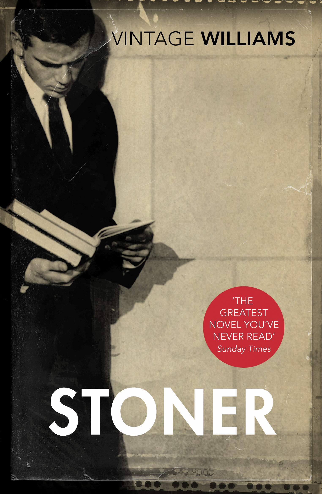
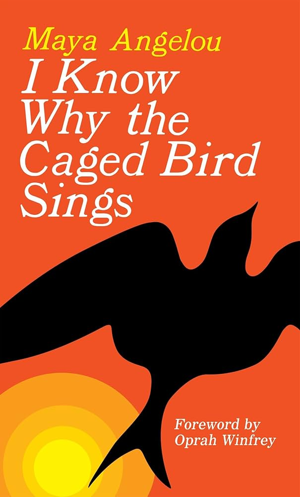
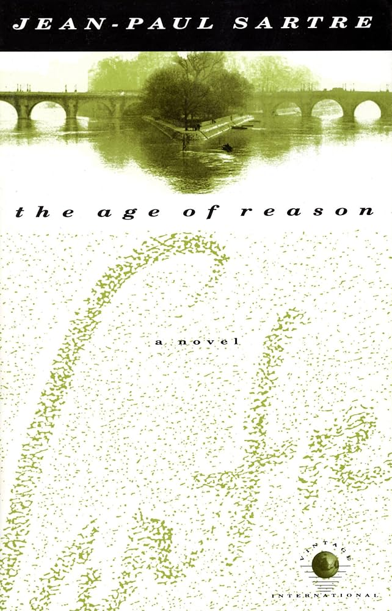
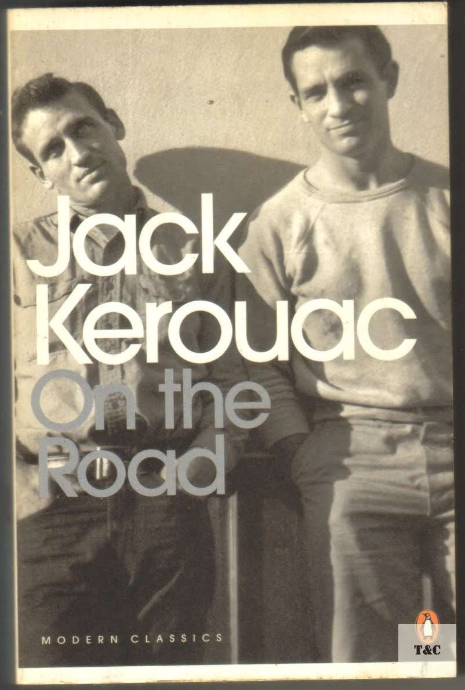
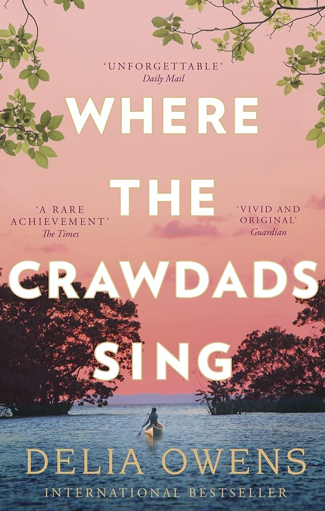
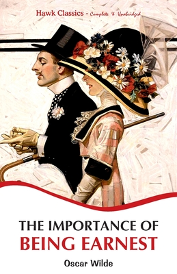
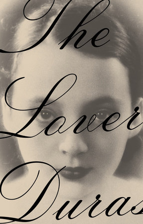
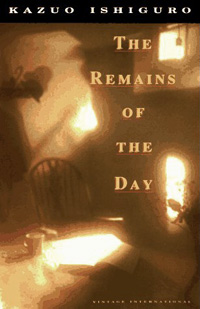
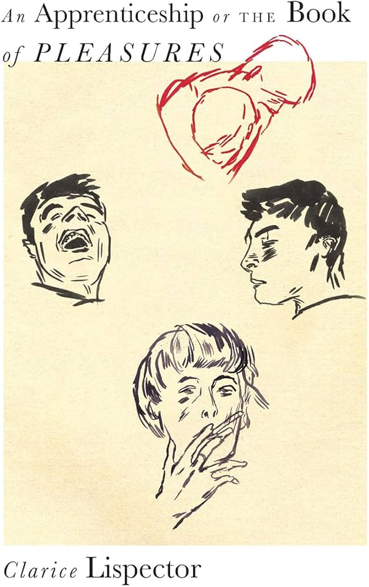

Summer Reading

Água Vida
"a lyrical, plotless interior monologue from a female painter exploring self-discovery, language, and existence. The text is a stream-of-consciousness exploration of art, life, and the limits of language, written as a letter to an unnamed "you," and is known for its challenging, philosophical, and poetic style. "

The Passion According to G.H.
"G.H., a well-to-do Rio sculptress, enters the room of her maid, which is as clear and white 'as in an insane asylum from which dangerous objects have been removed'. There she sees a cockroach - black, dusty, prehistoric - crawling out of the wardrobe and, panicking, slams the door on it. Her irresistible fascination with the dying insect provokes a spiritual crisis within, in which she questions her place in the universe and her very identity, propelling her towards an act of shocking transgression. Clarice Lispector's spare, deeply disturbing yet luminous novel transforms language into something otherworldly, and is one of her most unsettling and compelling works."

Into the Wild
"In April, 1992, a young man from a well-to-do family hitchhiked to Alaska and walked alone into the wilderness north of Mt. McKinley. His name was Christopher Johnson McCandless. He had given $25,000 in savings to charity, abandoned his car and most of his possessions, burned all the cash in his wallet, and invented a new life for himself. Four months later, a party of moose hunters found his decomposed body. How McCandless came to die is the unforgettable story of Into the Wild."

Stoner
"William Stoner is born at the end of the nineteenth century into a dirt-poor Missouri farming family. Sent to the state university to study agronomy, he instead falls in love with English literature and embraces a scholar’s life, so different from the hardscrabble existence he has known. And yet as the years pass, Stoner encounters a succession of disappointments: marriage into a “proper” family estranges him from his parents; his career is stymied; his wife and daughter turn coldly away from him; a transforming experience of new love ends under threat of scandal. Driven ever deeper within himself, Stoner rediscovers the stoic silence of his forebears and confronts an essential solitude. John Williams’s luminous and deeply moving novel is a work of quiet perfection. William Stoner emerges from it not only as an archetypal American, but as an unlikely existential hero, standing, like a figure in a painting by Edward Hopper, in stark relief against an unforgiving world."
Play It As It Lays
"A dissection of American life in the late 1960s, Play It As It Lays captures the mood of an entire generation. Joan Didion chose Hollywood to serve as her microcosm of contemporary society and exposed a culture characterized by emptiness and ennui. Maria Wyeth is an emotional drifter who has become almost anesthetized against pain and pleasure. She finds herself, in her early thirties, radically divorced from husband, lovers, friends, her own past and her own future. Actress, daughter, wife, mother, she has played each role to the sound of one hand clapping. Play It As It Lays is set in a place beyond good and evil, literally in Los Angeles and Las Vegas and the barren wastes of the Mojave, but figuratively in the landscape of an arid soul. Two decades after its original publication, it remains a profoundly disturbing novel."

I Know Why The Caged Bird Sings
"Here is a book as joyous and painful, as mysterious and memorable, as childhood itself. I Know Why the Caged Bird Sings captures the longing of lonely children, the brute insult of bigotry, and the wonder of words that can make the world right. Maya Angelou’s debut memoir is a modern American classic beloved worldwide. Sent by their mother to live with their devout, self-sufficient grandmother in a small Southern town, Maya and her brother, Bailey, endure the ache of abandonment and the prejudice of the local “powhitetrash.” At eight years old and back at her mother’s side in St. Louis, Maya is attacked by a man many times her age—and has to live with the consequences for a lifetime. Years later, in San Francisco, Maya learns that love for herself, the kindness of others, her own strong spirit, and the ideas of great authors (“I met and fell in love with William Shakespeare”) will allow her to be free instead of imprisoned."

The Age of Reason
"The Age of Reason is set in 1938 and tells of Mathieu, a French professor of philosophy who is obsessed with the idea of freedom. As the shadows of the Second World War draw closer -- even as his personal life is complicated by his mistress's pregnancy -- his search for a way to remain free becomes more and more intense."

On The Road
"A quintessential novel of America & the Beat Generation On the Road chronicles Jack Kerouac's years traveling the N. American continent with his friend Neal Cassady, "a sideburned hero of the snowy West." As "Sal Paradise" & "Dean Moriarty," the two roam the country in a quest for self-knowledge & experience. Kerouac's love of America, compassion for humanity & sense of language as jazz combine to make On the Road an inspirational work of lasting importance. This classic novel of freedom & longing defined what it meant to be "Beat" & has inspired every generation since its initial publication."

Where the Crawdads Sing
"In Where the Crawdads Sing, Owens juxtaposes an exquisite ode to the natural world against a profound coming of age story and haunting mystery. Thought-provoking, wise, and deeply moving, Owens’s debut novel reminds us that we are forever shaped by the child within us, while also subject to the beautiful and violent secrets that nature keeps. The story asks how isolation influences the behavior of a young woman, who like all of us, has the genetic propensity to belong to a group. The clues to the mystery are brushed into the lush habitat and natural histories of its wild creatures."

The Importance of Being Earnest
"Oscar Wilde's madcap farce about mistaken identities, secret engagements, and lovers entanglements still delights readers more than a century after its 1895 publication and premiere performance. "

The Lover
"Set against the backdrop of French colonial Vietnam, The Lover reveals the intimacies and intricacies of a clandestine romance between a pubescent girl from a financially strapped French family and an older, wealthy Chinese-Vietnamese man."

The Remains of the Day
"In the summer of 1956, Stevens, a long-serving butler at Darlington Hall, decides to take a motoring trip through the West Country. The six-day excursion becomes a journey into the past of Stevens and England, a past that takes in fascism, two world wars, and an unrealised love between the butler and his housekeeper."

An Apprenticeship or The Book of Pleasures
"What to make of a writer who follows the metaphysical heights of her great Passion According to GH with a book that looks suspiciously like a romance novel? In The Apprenticeship, or The Book of Pleasures, Clarice Lispector tries to discover how to bridge the gap between people, or how to even begin to try. A woman struggles to emerge from solitude and sadness into love, including sexual love: her guide on this journey is Ulisses, who (yes) leads her patiently into the fullness of life. The Apprenticeship was a bestseller and, as her biographer Benjamin Moser writes, "This accessible love story surprised many readers. When it came out, an interviewer said: 'I thought The Book of Pleasures was much easier to read than any of your other books. Do you think there’s any basis for that?' Clarice answered: 'There is. I humanized myself, the book reflects that.'”"
The Woman Destroyed
"Three long stories that draw the reader into the lives of three women, all past their first youth, all facing unexpected crises."

Giovanni’s Room
"Set in the contemporary Paris of American expatraites, liasons, and violence, a young man finds himself caught between desire and conventional morality. James Baldwin's brilliant narrative delves into the mystery of loving with a sharp, probing imagination, and he creates a moving, highly controversial story of death and passion that reveals the unspoken complexities of the heart."
Steppenwolf
"Steppenwolf is a poetical self-portrait of a man who felt himself to be half-human and half-wolf. This Faust-like and magical story is evidence of Hesse's searching philosophy and extraordinary sense of humanity as he tells of the humanization of a middle-aged misanthrope. Yet his novel can also be seen as a plea for rigorous self-examination and an indictment of the intellectual hypocrisy of the period. As Hesse himself remarked, "Of all my books Steppenwolf is the one that was more often and more violently misunderstood than any of the others"."